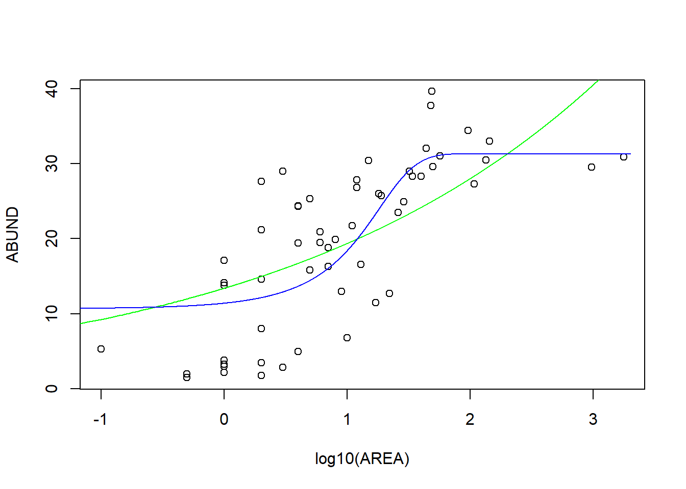

Stat4: Demo
- Demoscript als Download
- Datensatz loyn.csv
von LMs zu GLMs
temp <- c(10, 12 ,16, 20, 24, 25, 30, 33, 37)
besucher <- c(40, 12, 50, 500, 400, 900, 1500, 900, 2000)
strand <- data.frame("Temperatur" = temp, "Besucher" = besucher)
plot(besucher~temp, data = strand)
lm.strand <- lm(Besucher~Temperatur, data = strand)
summary(lm.strand)
Call:
lm(formula = Besucher ~ Temperatur, data = strand)
Residuals:
Min 1Q Median 3Q Max
-476.41 -176.89 55.59 218.82 353.11
Coefficients:
Estimate Std. Error t value Pr(>|t|)
(Intercept) -855.01 290.54 -2.943 0.021625 *
Temperatur 67.62 11.80 5.732 0.000712 ***
---
Signif. codes: 0 '***' 0.001 '**' 0.01 '*' 0.05 '.' 0.1 ' ' 1
Residual standard error: 311.7 on 7 degrees of freedom
Multiple R-squared: 0.8244, Adjusted R-squared: 0.7993
F-statistic: 32.86 on 1 and 7 DF, p-value: 0.0007115par(mfrow = c(2, 2))
plot(lm.strand)
par(mfrow = c(1 ,1))
xv <- seq(0, 40, by = .1)
yv <- predict(lm.strand, list(Temperatur = xv))
plot(strand$Temperatur, strand$Besucher, xlim = c(0, 40))
lines(xv, yv, lwd = 3, col= "blue")
glm.gaussian <- glm(Besucher~Temperatur, family = gaussian, data = strand)
glm.poisson <- glm(Besucher~Temperatur, family = poisson, data = strand)
summary(glm.gaussian)
Call:
glm(formula = Besucher ~ Temperatur, family = gaussian, data = strand)
Deviance Residuals:
Min 1Q Median 3Q Max
-476.41 -176.89 55.59 218.82 353.11
Coefficients:
Estimate Std. Error t value Pr(>|t|)
(Intercept) -855.01 290.54 -2.943 0.021625 *
Temperatur 67.62 11.80 5.732 0.000712 ***
---
Signif. codes: 0 '***' 0.001 '**' 0.01 '*' 0.05 '.' 0.1 ' ' 1
(Dispersion parameter for gaussian family taken to be 97138.03)
Null deviance: 3871444 on 8 degrees of freedom
Residual deviance: 679966 on 7 degrees of freedom
AIC: 132.63
Number of Fisher Scoring iterations: 2summary(glm.poisson)
Call:
glm(formula = Besucher ~ Temperatur, family = poisson, data = strand)
Deviance Residuals:
Min 1Q Median 3Q Max
-13.577 -12.787 -4.491 9.515 15.488
Coefficients:
Estimate Std. Error z value Pr(>|z|)
(Intercept) 3.500301 0.056920 61.49 <2e-16 ***
Temperatur 0.112817 0.001821 61.97 <2e-16 ***
---
Signif. codes: 0 '***' 0.001 '**' 0.01 '*' 0.05 '.' 0.1 ' ' 1
(Dispersion parameter for poisson family taken to be 1)
Null deviance: 6011.8 on 8 degrees of freedom
Residual deviance: 1113.7 on 7 degrees of freedom
AIC: 1185.1
Number of Fisher Scoring iterations: 5

Rücktranformation der Werte auf die orginale Skale (Hier Exponentialfunktion da family=possion als Link-Funktion den natürlichen Logarithmus (log) verwendet) Besucher = exp(3.50 + 0.11 Temperatur/°C)
#| label: fig-baseplots-glm
#| fig-cap: "Generierter Plot"
exp(3.500301) # Anzahl besucher bei 0°C[1] 33.12542exp(glm.poisson$coefficients[1]) # Werte aus Modell(Intercept)
33.12542 exp(3.500301 + 30*0.112817) # Anzahl besucher bei 30°C[1] 977.3169exp(glm.poisson$coeff[1] * glm.poisson$coeff[2]) #coefficients kann mit coeff abgekürzt werden(Intercept)
1.484225 # Test Overdispersion
if(!require(AER)){install.packages("AER")}
library(AER)
dispersiontest(glm.poisson)
Overdispersion test
data: glm.poisson
z = 3.8576, p-value = 5.726e-05
alternative hypothesis: true dispersion is greater than 1
sample estimates:
dispersion
116.5467 glm.quasi <- glm(Besucher~Temperatur, family = quasipoisson, data = strand)
summary(glm.quasi)
Call:
glm(formula = Besucher ~ Temperatur, family = quasipoisson, data = strand)
Deviance Residuals:
Min 1Q Median 3Q Max
-13.577 -12.787 -4.491 9.515 15.488
Coefficients:
Estimate Std. Error t value Pr(>|t|)
(Intercept) 3.50030 0.69639 5.026 0.00152 **
Temperatur 0.11282 0.02227 5.065 0.00146 **
---
Signif. codes: 0 '***' 0.001 '**' 0.01 '*' 0.05 '.' 0.1 ' ' 1
(Dispersion parameter for quasipoisson family taken to be 149.6826)
Null deviance: 6011.8 on 8 degrees of freedom
Residual deviance: 1113.7 on 7 degrees of freedom
AIC: NA
Number of Fisher Scoring iterations: 5par(mfrow = c(2,2))
plot(glm.gaussian)
plot(glm.poisson)plot(glm.quasi)
par(mfrow = c(1, 1))
plot(strand$Temperatur, strand$Besucher, xlim=c(0, 40))
xv <- seq(0, 40, by = .1)
yv <- predict(lm.strand, list(Temperatur = xv))
lines(xv, yv, lwd = 3, col = "blue")
yv2 <- predict(glm.poisson, list(Temperatur = xv))
lines(xv, exp(yv2), lwd = 3, col = "red")
yv3 <- predict(glm.quasi, list(Temperatur = xv))
lines(xv, exp(yv3), lwd = 3, col = "green")Logistische Regression
bathing <- data.frame(
"temperature" = c(1, 2, 5, 9, 14, 14, 15, 19, 22, 24, 25, 26, 27, 28, 29),
"bathing" = c(0, 0, 0, 0, 0, 1, 0, 0, 1, 0, 1, 1, 1, 1, 1))
plot(bathing~temperature, data = bathing)
glm.1<-glm(bathing~temperature, family = "binomial", data = bathing)
summary(glm.1)
Call:
glm(formula = bathing ~ temperature, family = "binomial", data = bathing)
Deviance Residuals:
Min 1Q Median 3Q Max
-1.7408 -0.4723 -0.1057 0.5123 1.8615
Coefficients:
Estimate Std. Error z value Pr(>|z|)
(Intercept) -5.4652 2.8501 -1.918 0.0552 .
temperature 0.2805 0.1350 2.077 0.0378 *
---
Signif. codes: 0 '***' 0.001 '**' 0.01 '*' 0.05 '.' 0.1 ' ' 1
(Dispersion parameter for binomial family taken to be 1)
Null deviance: 20.728 on 14 degrees of freedom
Residual deviance: 10.829 on 13 degrees of freedom
AIC: 14.829
Number of Fisher Scoring iterations: 6# Modeldiagnostik (wenn nicht signifikant, dann OK)
1 - pchisq (glm.1$deviance, glm.1$df.resid)[1] 0.6251679# Modellgüte (pseudo-R²)
1 - (glm.1$dev / glm.1$null)[1] 0.4775749# Steilheit der Beziehung (relative Änderung der odds bei x + 1 vs. x)
exp(glm.1$coefficients[2])temperature
1.323807 # LD50 (also hier: Temperatur, bei der 50% der Touristen baden)
-glm.1$coefficients[1] / glm.1$coefficients[2](Intercept)
19.48311 # Vorhersagen
predicted <- predict(glm.1, type = "response")
# Konfusionsmatrix
km <- table(bathing$bathing, predicted > 0.5)
km
FALSE TRUE
0 7 1
1 1 6# Missklassifizierungsrate
1 - sum(diag(km) / sum(km))[1] 0.1333333#Plotting
xs <- seq(0, 30, l = 1000)
model.predict <- predict(glm.1, type = "response", se = T,
newdata = data.frame(temperature = xs))
plot(bathing~temperature, xlab = "Temperature (°C)",
ylab = "% Bathing", pch = 16, col = "red", data = bathing)
points(model.predict$fit ~ xs, type="l")
lines(model.predict$fit+model.predict$se.fit ~ xs, type = "l", lty = 2)
lines(model.predict$fit-model.predict$se.fit ~ xs, type = "l", lty = 2)

Nicht-lineare Regression
if(!require(AICcmodavg)){install.packages("AICcmodavg")}
if(!require(nlstools)){install.packages("nlstools")}
library(AICcmodavg)
library(nlstools)
loyn <- read.delim("data/loyn.csv", sep = ",") # Verzeichnis muss dort gesetzt sein wo Daten sind
#Selbstdefinierte Funktion, hier Potenzfunktion
power.model <- nls(ABUND~c*AREA^z, start = (list(c = 1, z = 0)), data = loyn)
summary(power.model)
Formula: ABUND ~ c * AREA^z
Parameters:
Estimate Std. Error t value Pr(>|t|)
c 13.39418 1.30721 10.246 2.87e-14 ***
z 0.16010 0.02438 6.566 2.09e-08 ***
---
Signif. codes: 0 '***' 0.001 '**' 0.01 '*' 0.05 '.' 0.1 ' ' 1
Residual standard error: 7.995 on 54 degrees of freedom
Number of iterations to convergence: 12
Achieved convergence tolerance: 7.124e-06AICc(power.model)[1] 396.1723#Modeldiagnostik (in nlstools)
plot(nlsResiduals(power.model))
#Vordefinierte "Selbststartfunktionen"#
?selfStart
logistic.model <- nls(ABUND~SSlogis(AREA, Asym, xmid, scal), data = loyn)
summary(logistic.model)
Formula: ABUND ~ SSlogis(AREA, Asym, xmid, scal)
Parameters:
Estimate Std. Error t value Pr(>|t|)
Asym 31.306 2.207 14.182 < 2e-16 ***
xmid 6.501 2.278 2.854 0.00614 **
scal 9.880 3.152 3.135 0.00280 **
---
Signif. codes: 0 '***' 0.001 '**' 0.01 '*' 0.05 '.' 0.1 ' ' 1
Residual standard error: 7.274 on 53 degrees of freedom
Number of iterations to convergence: 8
Achieved convergence tolerance: 4.371e-06AICc(logistic.model)[1] 386.8643#Modeldiagnostik (in nlstools)
plot(nlsResiduals(logistic.model))
#Visualisierung
plot(ABUND~AREA, data = loyn)
par(mfrow = c(1, 1))
xv <- seq(0, 2000, 0.01)
# 1. Potenzfunktion
yv1 <- predict(power.model, list(AREA = xv))
lines(xv, yv1, col = "green")
# 2. Logistische Funktion
yv2 <- predict(logistic.model, list(AREA = xv))
lines(xv, yv2, col = "blue")
#Visualisierung II
plot(ABUND~log10(AREA), data = loyn)
par(mfrow = c(1, 1))
# 1. Potenzfunktion
yv1 <- predict(power.model, list(AREA = xv))
lines(log10(xv), yv1, col = "green")
# 2. Logistische Funktion
yv2 <- predict(logistic.model, list(AREA = xv))
lines(log10(xv), yv2, col = "blue")
#Model seletkion zwischen den nicht-lineraen Modelen
cand.models<-list()
cand.models[[1]] <- power.model
cand.models[[2]] <- logistic.model
Modnames <- c("Power", "Logistic")
aictab(cand.set = cand.models, modnames = Modnames)
Model selection based on AICc:
K AICc Delta_AICc AICcWt Cum.Wt LL
Logistic 4 386.86 0.00 0.99 0.99 -189.04
Power 3 396.17 9.31 0.01 1.00 -194.86

Smoother
loyn$log_AREA<-log10(loyn$AREA)
plot(ABUND~log_AREA, data = loyn)
lines(lowess(loyn$log_AREA, loyn$ABUND, f = 0.25), lwd = 2, col = "red")
lines(lowess(loyn$log_AREA, loyn$ABUND, f = 0.5), lwd = 2, col = "blue")
lines(lowess(loyn$log_AREA, loyn$ABUND, f = 1), lwd = 2, col = "green")GAMs
if(!require(mgcv)){install.packages("mgcv")}
library(mgcv)
gam.1 <- gam(ABUND~s(log_AREA), data = loyn)
gam.1
Family: gaussian
Link function: identity
Formula:
ABUND ~ s(log_AREA)
Estimated degrees of freedom:
2.88 total = 3.88
GCV score: 52.145 summary(gam.1)
Family: gaussian
Link function: identity
Formula:
ABUND ~ s(log_AREA)
Parametric coefficients:
Estimate Std. Error t value Pr(>|t|)
(Intercept) 19.5143 0.9309 20.96 <2e-16 ***
---
Signif. codes: 0 '***' 0.001 '**' 0.01 '*' 0.05 '.' 0.1 ' ' 1
Approximate significance of smooth terms:
edf Ref.df F p-value
s(log_AREA) 2.884 3.628 21.14 <2e-16 ***
---
Signif. codes: 0 '***' 0.001 '**' 0.01 '*' 0.05 '.' 0.1 ' ' 1
R-sq.(adj) = 0.579 Deviance explained = 60.1%
GCV = 52.145 Scale est. = 48.529 n = 56plot(loyn$log_AREA, loyn$ABUND, pch = 16)
xv <- seq(-1,4, by = 0.1)
yv <- predict(gam.1, list(log_AREA = xv))
lines(xv, yv, lwd = 2, col = "red")
AICc(gam.1)[1] 383.2109summary(gam.1)
Family: gaussian
Link function: identity
Formula:
ABUND ~ s(log_AREA)
Parametric coefficients:
Estimate Std. Error t value Pr(>|t|)
(Intercept) 19.5143 0.9309 20.96 <2e-16 ***
---
Signif. codes: 0 '***' 0.001 '**' 0.01 '*' 0.05 '.' 0.1 ' ' 1
Approximate significance of smooth terms:
edf Ref.df F p-value
s(log_AREA) 2.884 3.628 21.14 <2e-16 ***
---
Signif. codes: 0 '***' 0.001 '**' 0.01 '*' 0.05 '.' 0.1 ' ' 1
R-sq.(adj) = 0.579 Deviance explained = 60.1%
GCV = 52.145 Scale est. = 48.529 n = 56